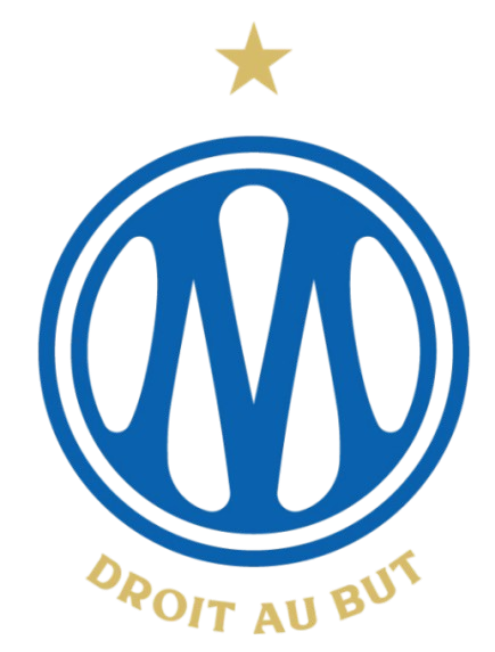
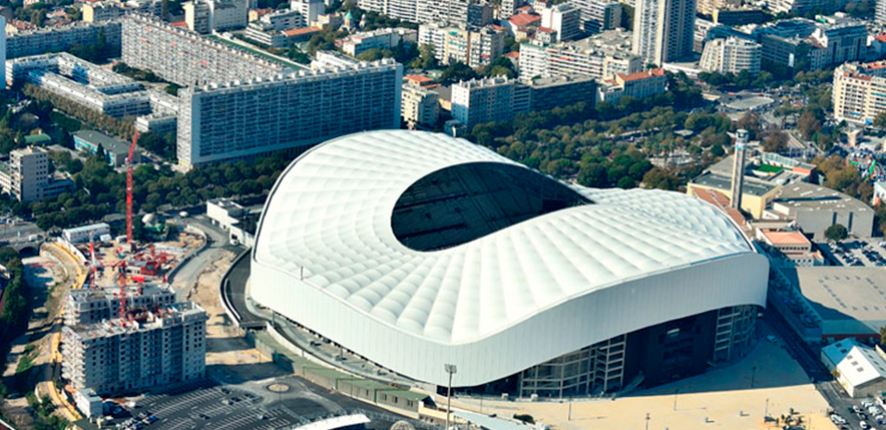

Treinador: Habib Beye
A história de Habib Beye é de uma transição notável de um defesa internacional senegalês para um treinador promissor e pioneiro na Ligue 1, conhecido pela sua comunicação eficaz e visão moderna do futebol.

Estádio: Orange Vélodrome
O Orange Vélodrome, originalmente conhecido apenas como Stade Vélodrome, é um estádio icónico e o segundo maior de França, com uma história rica que se estende por mais de oito décadas. É a casa do clube de futebol Olympique de Marseille desde a sua inauguração.

Estilo de Jogo:
O estilo de jogo que Habib Beye utiliza no Stade Rennais é baseado nos princípios que o tornaram bem-sucedido no Red Star FC: um futebol ofensivo, intenso e dominante, com o objetivo de ter a iniciativa do jogo.
"Droit au But!"